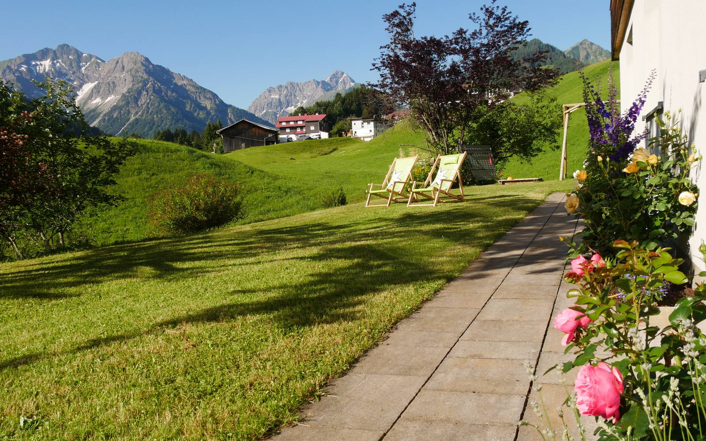
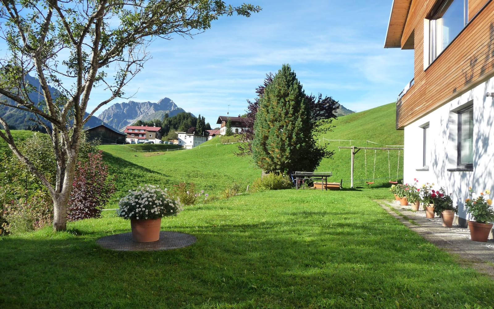
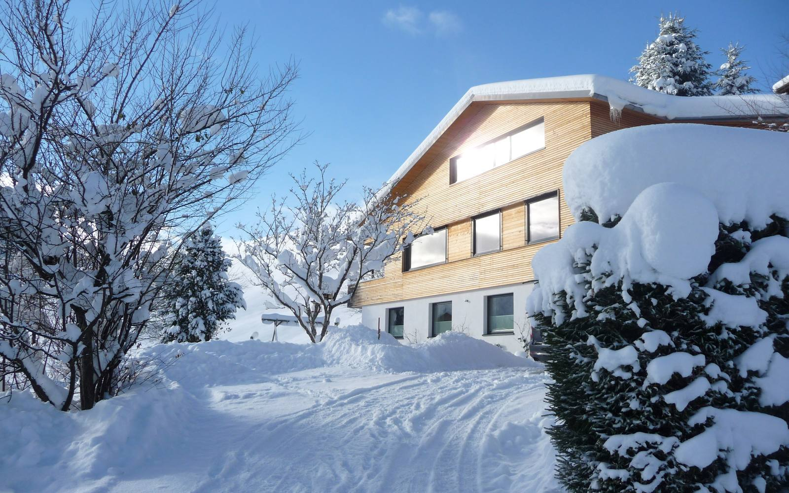

Mitten im Kleinwalsertal
Auf der Sonnenseite von Riezlern, im Ortsteil Egg – umgeben von Blumenwiesen, mit Bergen und Wanderwegen direkt vor der Tür.
Riezlern – ruhig gelegen, hervorragend erreichbar
Die Ferienwohnung Elias liegt auf der Sonnenseite von Riezlern im Ortsteil Egg, umgeben von Blumenwiesen mit unverbauter Aussicht in die Walser Bergwelt. Bushaltestelle, Skilifte, Wanderwege und Loipen erreichen Sie in wenigen Minuten.
Wandern, Wiesen, Weitblick
Im Sommer verwandelt sich das Kleinwalsertal in ein Wanderparadies: unzählige gut markierte Wege führen direkt von der Haustür aus in die Berge, vorbei an Almen und Blumenwiesen. Mit den Sommer-Bergbahnen Unlimited Kleinwalsertal-Oberstdorf – im Mietpreis inbegriffen – erreichen Sie viele Ausgangspunkte bequem und ohne Zusatzkosten.

Skifahren & Winterzauber
Im Winter verwandelt sich die Region in ein Skigebiet mit bestens präparierten Pisten und Loipen. Die nächsten Skilifte sind von der Ferienwohnung aus in wenigen Minuten erreichbar – ideal für einen unkomplizierten Skitag ohne lange Anfahrt.

So finden Sie zu uns
Familie Grabherr-Mathis, Eggstraße 15, A-6991 Riezlern, Kleinwalsertal, Österreich.